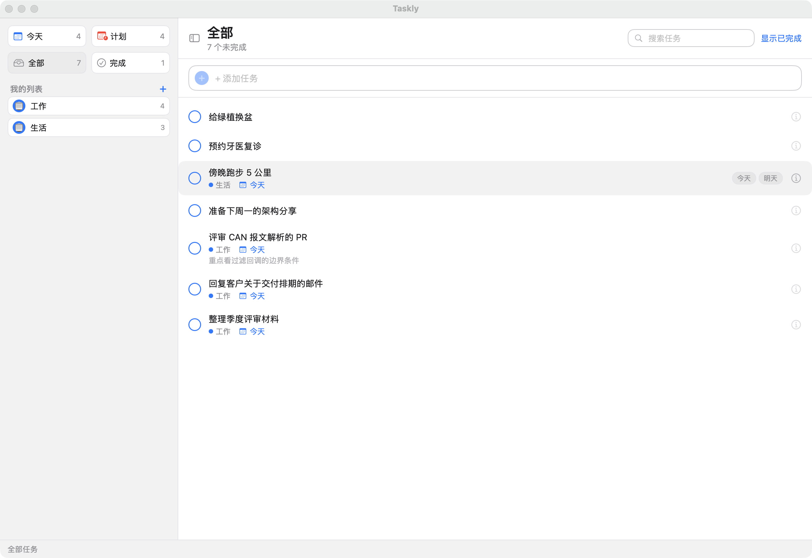
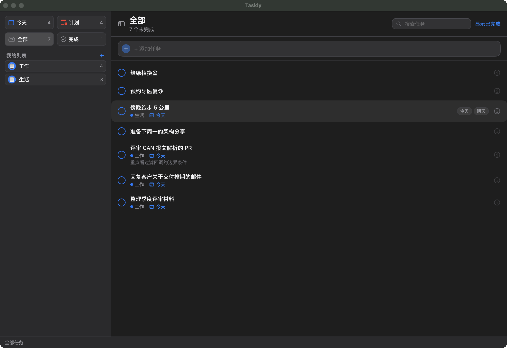

Taskly 是一款清爽、专注的任务管理器：支持便捷的排程速记、内置命令行工具便于自动化，并为每个桌面平台提供原生应用。数据始终归你所有。


宁静的色彩、考究的排版，没有多余的东西。让你专注于执行，而非管理。
任务存储在本地 SQLite 数据库。无需账号，无云端，无追踪。
macOS、Windows、Linux 原生应用，到处都是同样清爽的界面。
将 Taskly 指向任意云同步文件夹（iCloud、Dropbox、Syncthing…），数据库便会跟随你穿梭设备。WAL 模式确保并发访问安全。
自带你的云。Taskly 的每一项操作都有稳定的 JSON 命令行——脚本化、管道传递、交给 AI 代理。稳定的退出码、结构化输出，毫无意外。
将工作、生活与创意分入各自着色的列表，互不干扰。
Taskly 覆盖 macOS（SwiftUI）、Windows（WinUI 3）与 Linux（GTK4）——共享 Racket 核心驱动轻薄的第一方宿主，JSON CLI 由 63 例 golden 套件钉死，数据就是单个本地 SQLite 文件。下载安装即用。
macOS 用 SwiftUI，Windows 用 WinUI 3，Linux 用 GTK4——每个平台都是第一方手感，全部逻辑在一个 Racket CS 核心里经类型化 RPC 驱动它们。
启动时静默检查 + 设置里手动检查。后端验证 Ed25519 签名的更新清单并下载产物，宿主负责安装——绝不碰你的数据。
无头 CLI，稳定的 JSON 输出与退出码：`taskly add "买牛奶" --due tomorrow --json`。跨平台字节级一致由 CI 中的 63 例 golden 套件钉死。
桌面核心开源——自由使用、分叉与研究。数据格式与 CLI 都是成文的契约，而非偶然。
每个版本都带 SHA256SUMS 与签名更新清单；macOS 包为 ad-hoc 签名——首次启动如被 Gatekeeper 拦截，执行 `xattr -cr /Applications/Taskly.app` 即可。